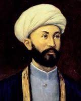
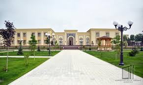

Is'hoqhon Ibrat (1862–1937) was a renowned Uzbek intellectual, educator, writer, historian, linguist, and reformist. He was born in the Khorezm region and became one of the pioneers of the Jadid movement in Central Asia.
Throughout his life, Ibrat traveled extensively, visiting countries such as India, Turkey, Egypt, and Arabia. These journeys broadened his worldview and inspired him to introduce modern educational methods in his homeland.
He founded one of the first modern secular schools in Turkestan, where he taught languages, geography, science, and history. He authored several textbooks and dictionaries to support education and enlightenment in the region.
Is'hoqhon Ibrat believed in progress through knowledge and education. Today, he is remembered as a national hero and a visionary thinker whose legacy lives on in Uzbek culture and intellectual history.
Is'hoqhon Ibrat had a strong network of family and fellow intellectuals who influenced and supported his work. He came from a respected family in Khorezm, known for their commitment to religious and cultural education.
While many details of his family life are not well-documented, his relatives were known to support traditional learning and helped shape his early education. His home became a hub for scholars and reformers of his era.
Among his closest associates were other prominent Jadid reformers, including Mahmudhoja Behbudi and Abdurauf Fitrat. Together, they advocated for modern schools, printed literature, and a more enlightened, educated society.
Is'hoqhon Ibrat was a gifted polyglot. He is said to have mastered over 10 languages, including Arabic, Persian, Turkish, Russian, English, and Urdu. His passion for languages began in his youth and grew stronger through his travels.
During his journeys to the Middle East, South Asia, and the Ottoman Empire, he immersed himself in foreign cultures and learned to read, write, and translate in multiple languages. This allowed him to bring foreign knowledge back to Central Asia.
He compiled dictionaries and grammar books to help others learn. Ibrat believed multilingualism was a key to enlightenment and global awareness. He encouraged his students to study languages as a way to connect with the wider world.
Despite his contributions to education and culture, Is'hoqhon Ibrat fell victim to the political repression of the Soviet regime. In the 1930s, Stalin’s purges targeted many Central Asian intellectuals who were seen as threats to Soviet ideology.
Ibrat’s promotion of independent thinking, modern education, and cultural identity was viewed as anti-Soviet. He was falsely accused of nationalism and counter-revolutionary activity, simply because he valued his people's history and freedom.
In 1937, during the height of Stalin’s Great Terror, Is'hoqhon Ibrat was arrested and executed by Soviet authorities. His death was a tragic loss for Uzbek culture, but his ideas lived on, inspiring future generations of educators and reformers.
There is limited official documentation about the lives of Is'hoqhon Ibrat’s children, but historical accounts suggest that he had children who were raised in the same environment of education and cultural values.
Ibrat strongly believed in educating future generations — including his own family. It is likely that his children were among the first to benefit from his ideas on modern schooling and language learning. They were raised with a deep respect for science, literature, and social responsibility.
Unfortunately, like many families of intellectuals during the Soviet purges, his descendants may have suffered persecution or had to hide their identities. Even so, the moral and intellectual legacy of Is'hoqhon Ibrat likely lived on through his family’s quiet resilience.
Today, his descendants and admirers honor his memory by continuing to promote knowledge, culture, and Uzbek identity.
One of Is'hoqhon Ibrat’s greatest contributions to his people was the establishment of a modern school in the early 20th century. Located in the city of Namangan, this school was one of the first institutions in the region to combine religious and secular education.
The school featured a curriculum that included mathematics, science, geography, history, and multiple languages — a revolutionary concept at the time. Ibrat believed that young people should be taught not only to read and write but also to think critically and understand the world.
He personally taught students, wrote textbooks, and translated materials from other languages. His school became a model for other educators in Turkestan and helped spread the Jadid educational movement throughout the region.
Though the original building no longer stands, Ibrat’s school laid the foundation for modern education in Uzbekistan and remains a powerful symbol of enlightenment and reform.
